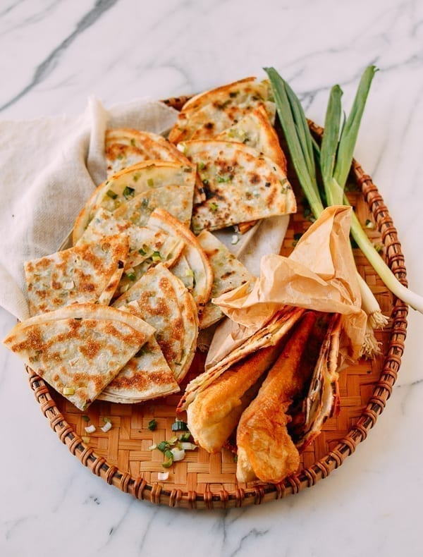

Onion Pancakes

Crispy and savory snack
Taiwanese green onion pancake, or cong you bing is a delicious savoury street snack that is easy to batch make and freeze.
It can be cooked from frozen, making it the perfect food for when you have unexpected guests or run out of dinner ideas. It's a simple recipe beloved for its flaky, crispy texture.
Ingredients
- 1 pack of dumpling wrappers
- oil
- salt
- 6-8 scallions
Instructions
- Take the dumpling wrappers out of the refrigerator, and let them warm up a bit (they don't necessarily have to be at room temperature, but they shouldn't be cold). Wash the scallions and pat them thoroughly dry with a clean kitchen towel. Slice the scallions in half lengthwise and finely chop them.
- Prepare a small dish of salt and a dish of oil, along with a pastry brush.
- On a clean work surface, take a dumpling wrapper, brush it with a thin layer of oil, and lightly sprinkle with salt. Then cover with a layer of scallions. Top it with another dumpling wrapper, and lightly press it down. Repeat the process until you have 4-7 layers of dumpling wrappers.
- Use a rolling pin to roll the layered dumpling skins into a pancake––however thick or thin you like. Rotate the scallion pancake as you roll to get a perfect round shape.
- Heat a flat-bottomed non-stick or cast iron pan over medium heat. Spread 1 tablespoon oil around in the pan, and add the scallion pancake. Cook each side until golden brown, about 2-3 minutes per side. (Avoid using high heat, as it will burn the pancake without cooking it through).
- If the pan looks dry after flipping the pancake, you can add another tablespoon of oil.
- Enjoy these plain or with a dipping sauce! We’ve found that they go great with our dumpling dipping sauce.